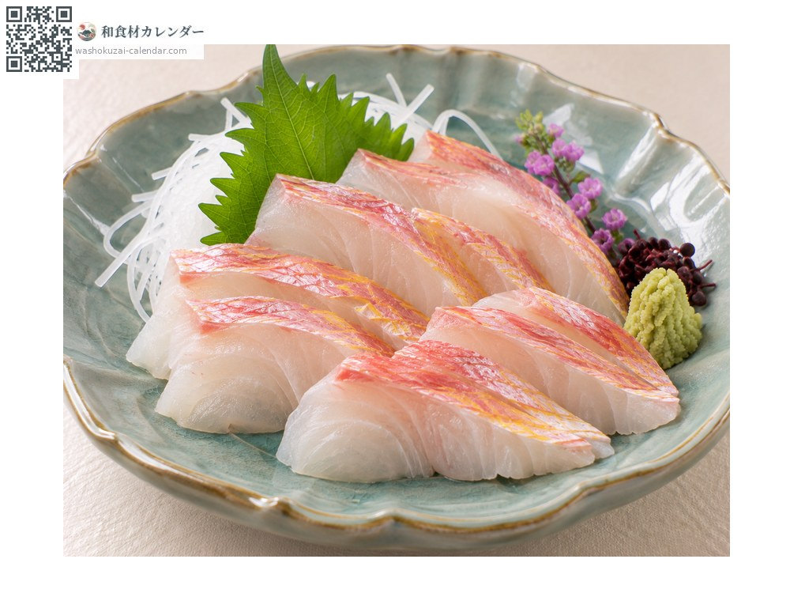
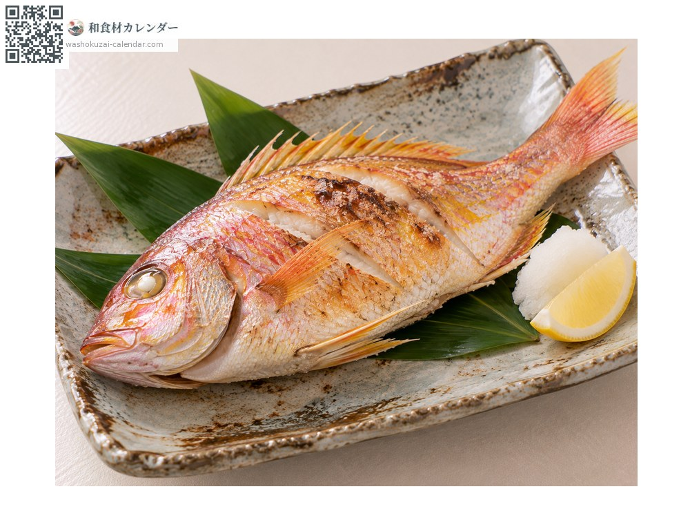
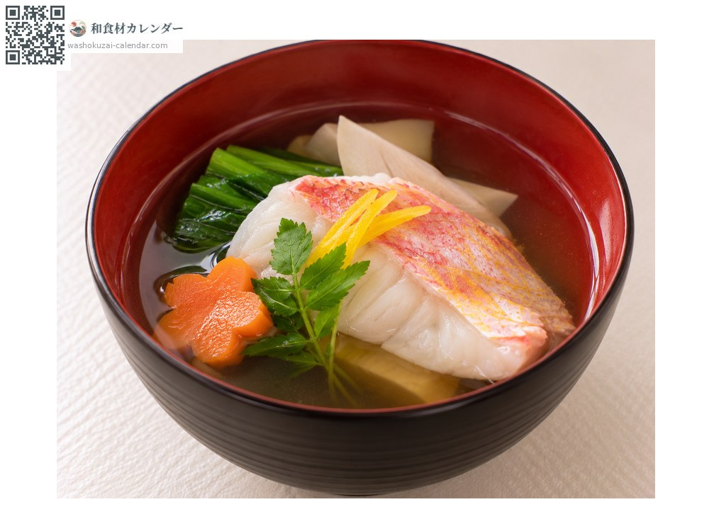
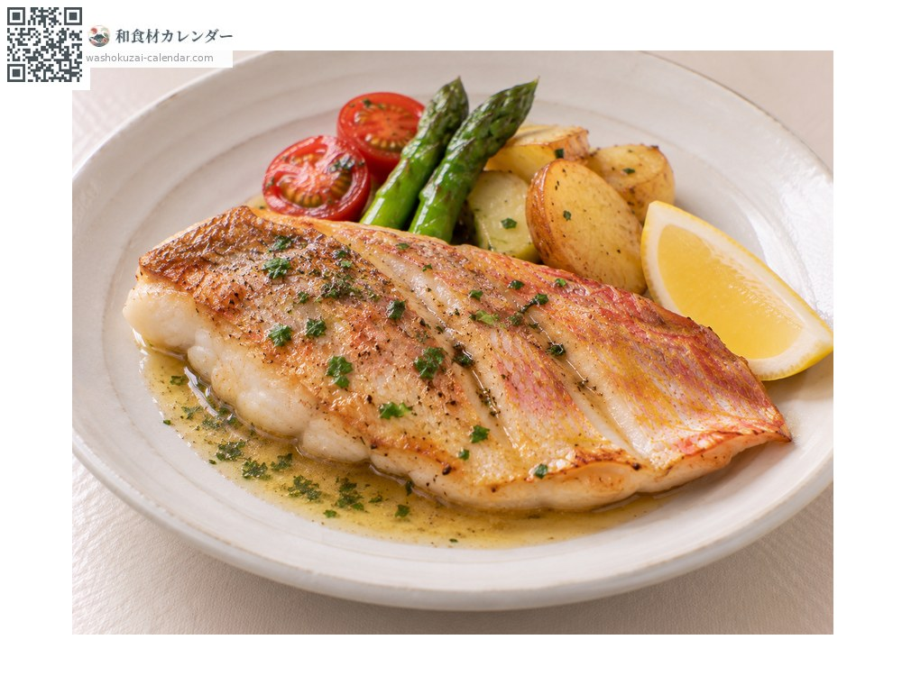

อาหารทะเล
ปลาทรายแดงเส้นทอง
イトヨリダイ いとよりだい
อร่อยที่สุดในเดือน ม.ค., ก.พ., พ.ย., ธ.ค.

ช่วงที่อร่อยที่สุด
ม.ค.
ก.พ.
มี.ค.
เม.ย.
พ.ค.
มิ.ย.
ก.ค.
ส.ค.
ก.ย.
ต.ค.
พ.ย.
ธ.ค.
ช่วงอร่อยที่สุดมีจำหน่าย
วิธีปรุง

ซาชิมิ
เนื้อขาวหรูหราและหวานอ่อน ย่างผิวเบา ๆ จะหอมขึ้น

ย่างเกลือ
สีของหนังสวยงาม ย่างแล้วยังคงความสดใส

ใส่ซุปใส
กระดูกให้น้ำซุปใส ใช้ทำซุปในงานมงคล

มูนิแยร์
ทอดเนย เนื้อรสอ่อนเข้ากับการปรุงแบบตะวันตก
วิธีเลือก
สีชมพูและแถบเหลืองตามยาวสดใส ตาใสและลำตัวแน่น
วิธีเก็บรักษา
เนื้อนุ่มและมีน้ำมาก ควักไส้แล้วแช่เย็น ใช้ภายใน 2 วัน
แหล่งผลิตหลัก
เกร็ดน่ารู้
ปลายบนของครีบหางยืดยาวเหมือนเส้นด้าย จึงเป็นที่มาของชื่อญี่ปุ่น แม้ชื่อมีคำว่าไท แต่ไม่ได้อยู่ในวงศ์ปลาไท ลำตัวสีชมพูอ่อนมีแถบเหลืองพาดตามยาว อาหารญี่ปุ่นให้ค่ากับความสวยงามของมันไม่แพ้รสชาติ
วัตถุดิบที่อร่อยที่สุดในช่วงเดียวกัน
 ปลาซาบะ
ปลาซาบะ ปลาบุริ (ปลาหางเหลือง)
ปลาบุริ (ปลาหางเหลือง) ปลาทูน่าครีบน้ำเงิน
ปลาทูน่าครีบน้ำเงิน ปลากระโทง
ปลากระโทง ปลาเรนโกได (ปลาทรายแดงหลังเหลือง)
ปลาเรนโกได (ปลาทรายแดงหลังเหลือง) ปลาทาคาโนฮาได (ปลาหางจุด)
ปลาทาคาโนฮาได (ปลาหางจุด) ปลากุเระ (ปลาเมจินะ)
ปลากุเระ (ปลาเมจินะ) ปลากระบอก
ปลากระบอก